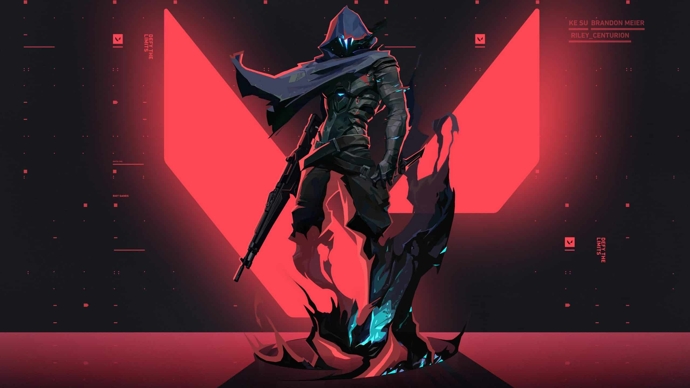

Valorant

VALORANT é um FPS tático 5x5 focado em personagens, ambientado em um mundo global. Faça jogadas incríveis e supere seus oponentes com habilidades táticas, mecânica de tiro e trabalho em equipe.
Desafie Seus Limites
Misture seu estilo e experiência em um cenário global e competitivo. Você terá 13 rodadas para atacar e defender com disparos certeiros e habilidades táticas. Com apenas uma vida por rodada, você deve pensar mais rápido que o oponente se quiser sobreviver. Encare inimigos nos modos Competitivo e Sem Ranque, além da Disputa da Spike e do Mata-Mata.
A Criatividade É Sua Melhor Arma
Mais do que armas e munição, VALORANT inclui Agentes com habilidades adaptativas, rápidas e letais, que criam oportunidades para você exibir sua mecânica de tiro. Cada Agente é único, assim como os momentos de destaque de cada partida!
Batalhe Ao Redor Do Mundo
Cada mapa serve como um palco para mostrar sua criatividade. Os mapas são feitos sob medida para estratégias de equipe, jogadas espetaculares e momentos eletrizantes. Faça as jogadas que todo mundo vai tentar imitar no futuro!
1 - Agente Jett

Representando a Coreia do Sul, Jett tem um estilo de luta ágil e evasivo que permite que ela assuma riscos como ninguém. Ela se move rapidamente pelo campo de batalha, eliminando os inimigos antes mesmo que eles percebam quem os atingiu.
2 - Agente Omen
Omen, uma presença fantasmagórica, caça nas sombras. Ele cega os inimigos, teleporta-se pelo campo e espalha paranoia enquanto o adversário tenta descobrir de onde virá seu próximo ataque.